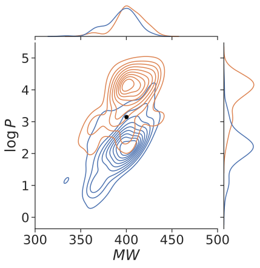
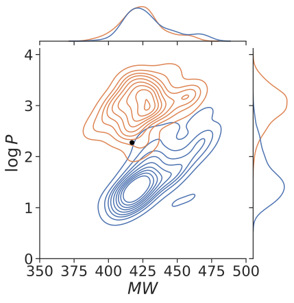
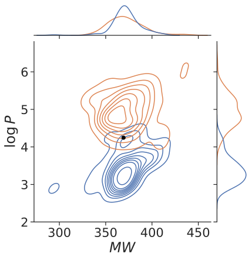
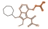
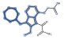
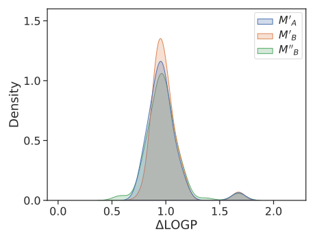
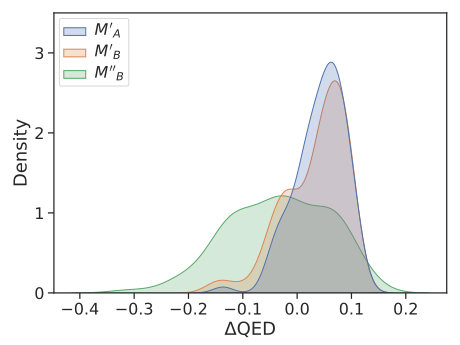
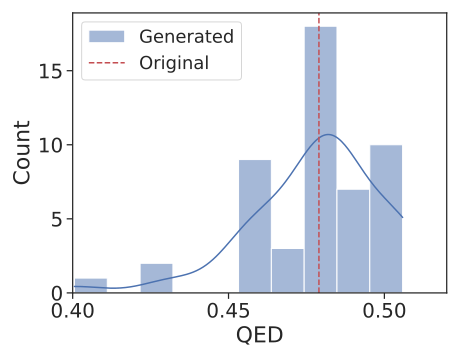
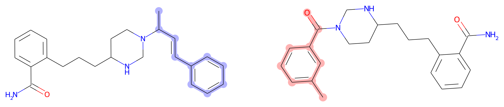
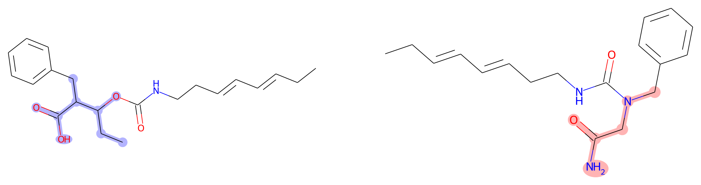

Bioisosteric replacement substitutes one molecular fragment for a chemically or biologically analogous one, tuning a compound's properties without disrupting its activity. Existing in silico approaches largely depend on an expert to nominate the modification site, and struggle to move more than one property at a time.
DeepBioisostere performs the replacement end to end. It selects the site itself, chooses the incoming fragment, and decides how to attach it, conditioned on a target change in several properties at once. Trained on matched molecular pairs drawn from experimental bioassay data, it proposes replacements that lie outside any pre-established substitution table, and we demonstrate its use in computational hit-to-lead optimization.
A single forward pass makes three dependent decisions. No modification site is supplied, and no substitution rules are consulted.
The molecule is decomposed along BRICS bonds and every resulting subgraph is scored as a removal candidate.
The vacated site is matched against a library of 140,096 insertion fragments, scored jointly with the removal choice.
A fragment can often be joined in more than one orientation, so the attachment points are scored before the product is composed.
Conditioning is applied to the property change rather than its absolute value, so one checkpoint serves any starting molecule and several targets can be commanded together.
Three input molecules are each given the same pair of opposing commands: hold molecular weight, move logP by −1 and by +1. The generated populations separate along logP while both remain centred on the input's molecular weight.



Molecule 1Molecule 2Molecule 3
| Commanded | Achieved | Held property |
|---|---|---|
| logP −1 | −0.84 ± 0.43 | Mw −0.28 ± 12.6 |
| logP +1 | +0.83 ± 0.38 | Mw +0.04 ± 12.8 |
| QED +0.1 | +0.07 ± 0.09 | Mw −0.11 ± 12.1 |
| QED +0.2 | +0.10 ± 0.10 | Mw −0.57 ± 12.0 |
| SA −0.5 | −0.42 ± 0.43 | QED −0.03 ± 0.07 |
| SA −1 | −0.72 ± 0.52 | QED −0.03 ± 0.07 |
In every row the commanded property moves and the held property does not, so the two are steered independently rather than traded against each other.
The same molecule under the two opposing commands is cut in two different places. Removing the lipophilic group lowers logP and removing the polar one raises it, so the site the model selects tracks the direction it was asked to move.


Polar oxyacetic acid arm removedLipophilic cycloheptylmethyl group removed
Two molecules, A and B, share a leaving fragment. The model's own outputs for each (M′A, M′B) are compared against a graft (M″B) in which the fragments chosen for A are transplanted onto B's scaffold.


ΔlogP — all three coincideΔQED — the graft separates
For one molecule and one fixed leaving fragment, 100 replacements were generated. The proposals are chemically diverse rather than enumerations of a substitution table, and several do not appear among the training pairs.

The inputs are raw outputs of a structure-based generative model — compounds that score well against a pocket but are awkward to synthesize. Applying DeepBioisostere downstream improves synthetic accessibility and drug-likeness together, without cost to the docking score.

OriginalGenerated

OriginalGenerated
Lower SA indicates an easier synthesis, higher QED a more drug-like compound, and a more negative docking score a better predicted pose.
The implementation is distributed through PyPI, with source on GitHub under the MIT licence. Trained weights and the fragment library are hosted on Hugging Face and are retrieved on first use, so neither has to be obtained separately.
The analysis notebooks, the per-figure source data, the docking provenance and the reproduction scripts are archived on Zenodo. That record is self-contained: every figure on this page can be regenerated from it without this repository.
@article{kim2026deepbioisostere,
title = {Autonomous bioisosteric replacement for multi-property
optimization in drug design},
author = {Kim, Hyeongwoo and Moon, Seokhyun and Zhung, Wonho and
Kim, Shinwoo and Lim, Jaechang and Kim, Woo Youn},
journal = {Nature Communications},
year = {2026},
doi = {10.1038/s41467-026-75512-9},
}